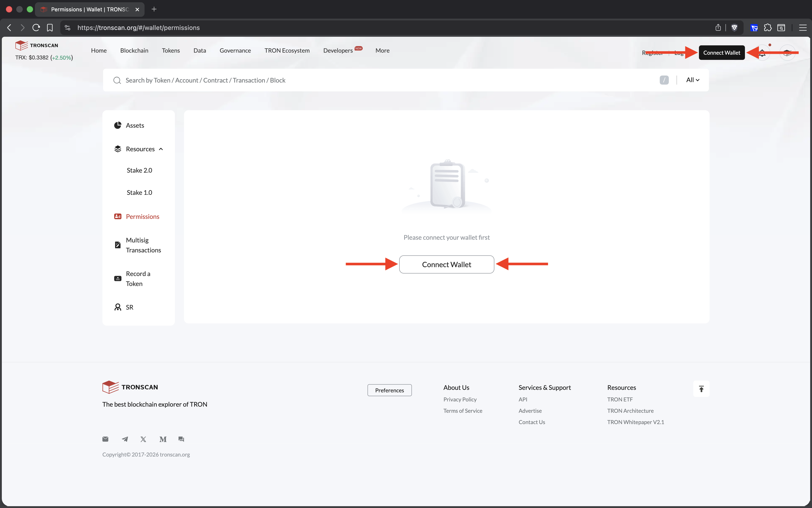
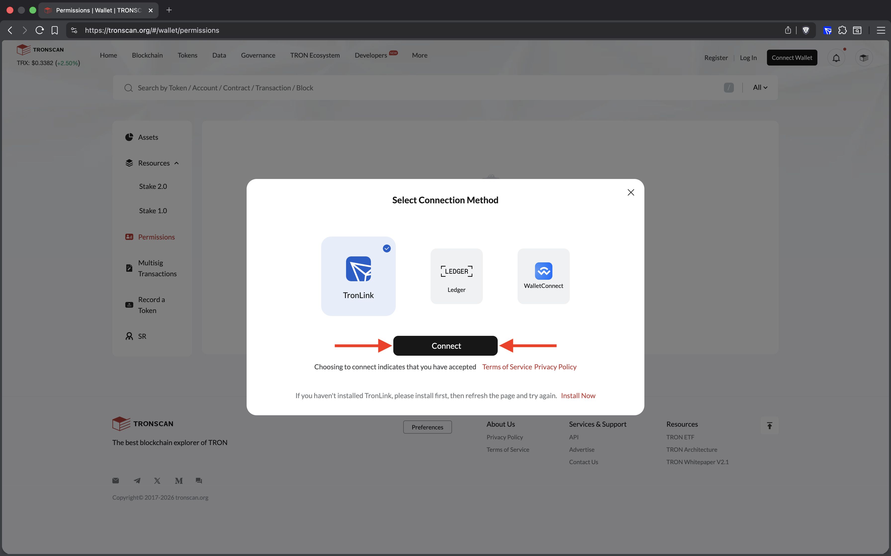
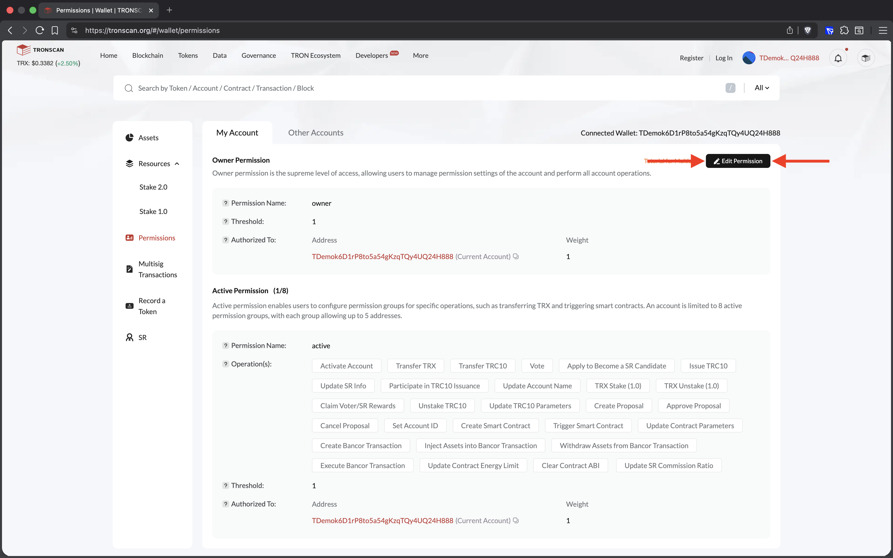
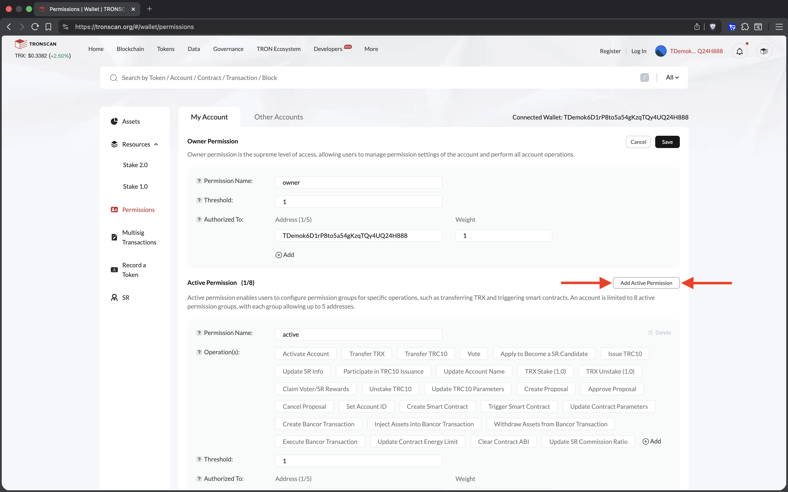
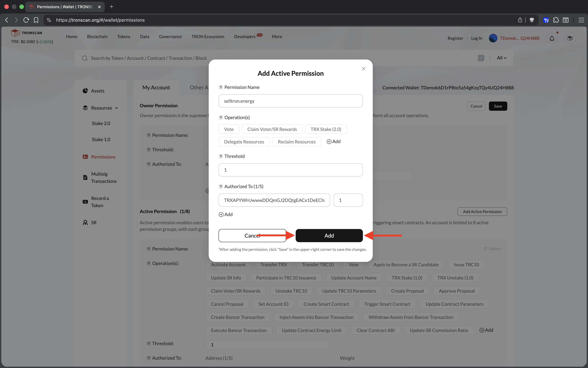
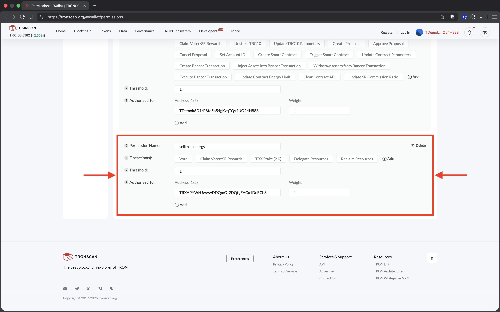
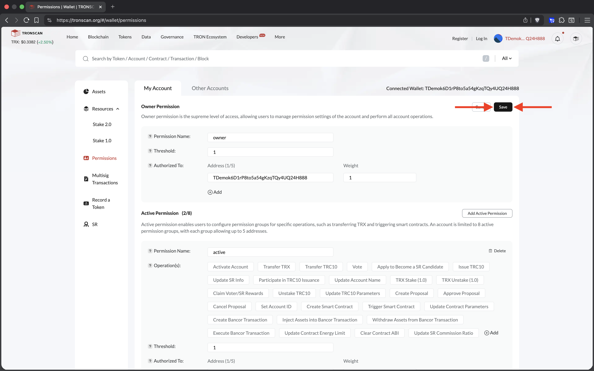
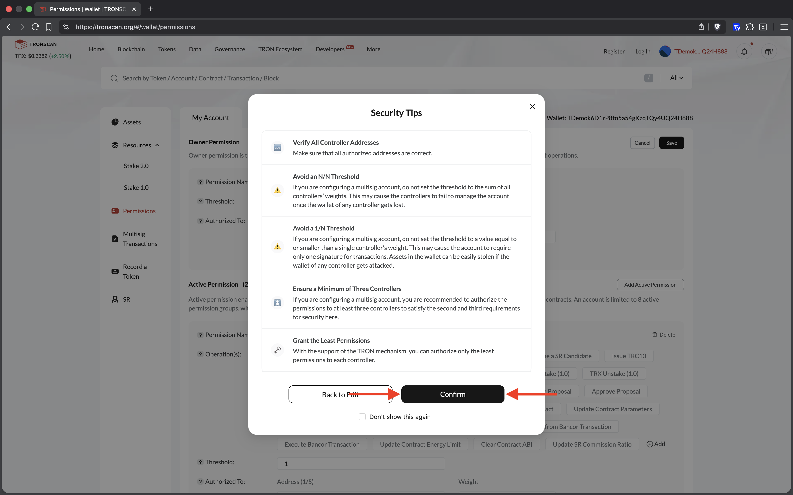
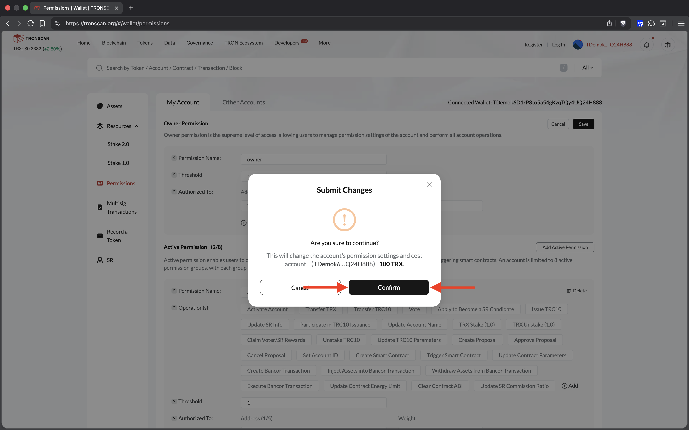
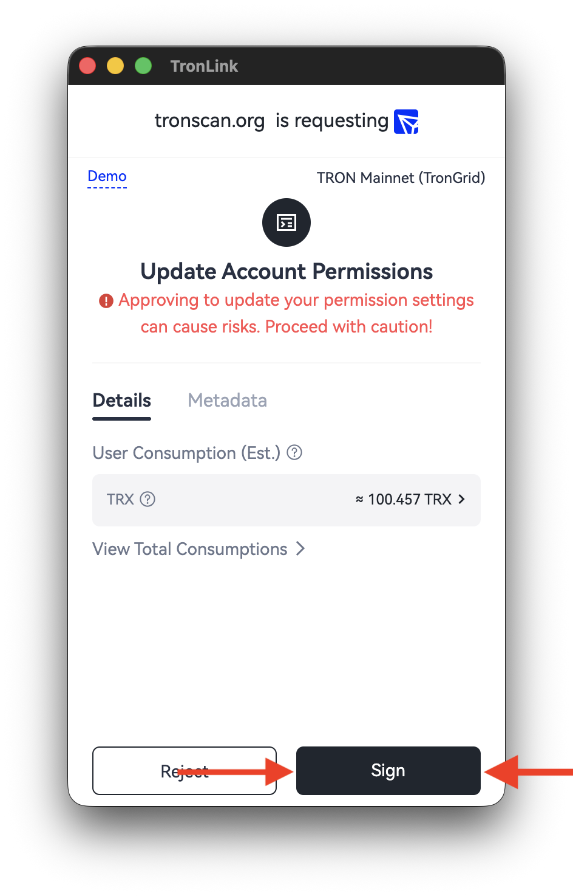

Как предоставить разрешения на продажу вашей TRON энергии - Подробное пошаговое руководство
Цель: Предоставить доверенному адресу сервиса selltron.energy ограниченный контроль для стейкинга и делегирования энергии без возможности перевода TRX или вызова смарт контрактов.
Понимание разрешений аккаунта TRON
Active Permission: Это тип разрешения, который позволяет доверенному адресу выполнять определённые действия от вашего имени, такие как стейкинг, делегирование ресурсов или голосование. Оно предназначено для предоставления ограниченного контроля над вашим аккаунтом без предоставления доступа к чувствительным операциям, таким как перевод TRX или взаимодействие со смарт контрактами. Active Permission идеально подходит для сценариев, где вы хотите делегировать определённые обязанности, сохраняя при этом общий контроль над своим аккаунтом.
Owner Permission: В отличие от Active Permission, настройка Owner Permission предоставляет полный доступ к вашему аккаунту, включая возможность переводить TRX, вызывать смарт контракты или выполнять другие неограниченные действия. Это разрешение является самым высоким уровнем контроля и должно предоставляться только сторонам, которым вы полностью доверяете, так как оно подвергает ваш аккаунт риску потенциального злоупотребления или несанкционированных транзакций. Обычно оно не рекомендуется, если только вы полностью не доверяете уполномоченной стороне и не понимаете последствия предоставления такого доступа.
Weight (вес) и Threshold (порог) используются для управления подписанием транзакций. Каждому адресу, добавленному в список разрешений, назначается weight, который представляет "вес" его голоса. Threshold – это минимальный суммарный weight, необходимый для подписания транзакции. Например, если threshold установлен на 2 и у вас есть два адреса с weight 1 и 1, оба адреса должны одобрить операцию, чтобы достичь threshold. Если один адрес имеет weight, равный threshold или превышающий его, он может действовать самостоятельно. Эта система обеспечивает гибкость и безопасность, позволяя нескольким адресам совместно контролировать доступ или требуя нескольких одобрений для чувствительных действий.
Предоставление разрешений другому адресу позволяет ему выполнять определённые действия от вашего имени, такие как продажа энергии. Эта настройка особенно полезна для того, чтобы сервис selltron.energy мог автоматически продавать вашу TRON энергию. Ниже приведён подробный разбор предоставляемых разрешений:
- TRX Stake (2.0) позволяет уполномоченному адресу замораживать ваш TRX для Bandwidth или Energy, которые необходимы для совершения транзакций или взаимодействия со смарт контрактами.
- Delegate Resources позволяет уполномоченному адресу делегировать ваш Bandwidth или Energy другому адресу.
- Reclaim Resources позволяет уполномоченному адресу возвращать заделегированные ресурсы обратно на ваш аккаунт.
- Vote позволяет уполномоченному адресу использовать ваш замороженный TRX для голосования за Super Representatives (SRs), внося вклад в управление сетью TRON и получая за это стейкинговые награды.
- Claim Voter/SR Rewards позволяет уполномоченному адресу получать ваши стейкинговые награды на ваш адрес.
Тщательно выбирая эти разрешения, вы можете делегировать только определённые действия, сохраняя контроль над чувствительными операциями, такими как перевод TRX или взаимодействие со смарт контрактами.
Пошаговая инструкция:
-
Откройте страницу Permissions на сайте tronscan.org
Используйте desktop браузер с установленным TronLink Extension for Browsers. Перейдите на страницу разрешений своего аккаунта на сайте blockchain explorer https://tronscan.org/#/wallet/permissions.

Страница Permissions в Tronscan, где настраиваются разрешения аккаунта TRON. -
Подключите кошелек к сайту через TronLink
Нажмите
Connect Walletв правом верхнем углу или в центре страницы. ВыберитеTronLinkи нажмитеConnect.
Подключение кошелька к Tronscan через TronLink. -
Добавьте Active Permission
Нажмите кнопку
Edit Permission, а затем кнопкуAdd Active Permission. Появится модальное окно с заголовкомAdd Active Permission.
Нажмите Edit Permission, чтобы перейти к редактированию разрешений.
Нажмите Add Active Permission, чтобы создать новое ограниченное разрешение. -
Дайте разрешения адресу сервиса selltron.energy
- В поле
Permission Nameвведите имя selltron.energy -
Выберите только следующие
Operation(s):TRX Stake (2.0)— заморозка TRX для энергииDelegate Resources— делегирование энергииReclaim Resources— возврат делегации энергииVote— голосование за Super Representatives с использованием застейканного TRXClaim Voter/SR Rewards— получение стейкинговых наград на ваш адрес
- Установите
Thresholdна1 -
Под
Authorized To (1/5):- Вставьте адрес кошелька
TRXAPYWHJwwwDDQmGJ2DQtgEACx1DeECh8 - Установите
Weightна1
- Вставьте адрес кошелька
- Нажмите кнопку
Addсправа внизу в модальном окне

Настройка Active Permission: имя, операции, threshold, адрес и weight. - В поле
-
Проверьте и сохраните
Удостоверьтесь, что необходимый Active Permission был добавлен, и нажмите
Saveв правом верхнем углу.
Проверьте, что Active Permission добавлен с правильными параметрами. 
Нажмите Save, чтобы сохранить изменения разрешений. -
Подтвердите сохранение
В модальном окне Security Tips нажмите
Confirm, затем в модальном окне Submit Changes также нажмитеConfirm.
Подтвердите предупреждение безопасности в окне Security Tips.
Подтвердите отправку изменений в окне Submit Changes. -
Подпишите транзакцию
Теперь непосредственно в сплывающем окне кошелька TronLink подпишите транзакцию Update Account Permissions нажатием на
Sign.
Подпишите транзакцию Update Account Permissionsв TronLink. -
Проверьте Permissions
После успешного подписания транзакции обновите страницу Permissions. Адрес
TRXAPYWHJwwwDDQmGJ2DQtgEACx1DeECh8появится только с указанными разрешениями.
Эта настройка идеально подходит для того, чтобы сервис selltron.energy мог управлять стейкингом, делегированием энергии и голосованием за Super Representatives без предоставления полного доступа к кошельку.